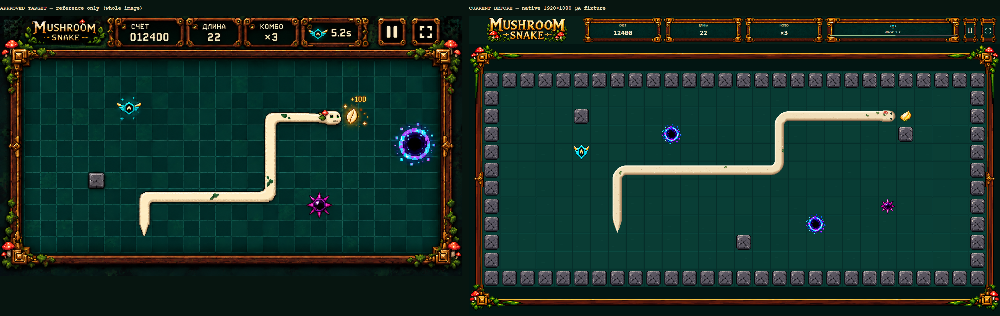
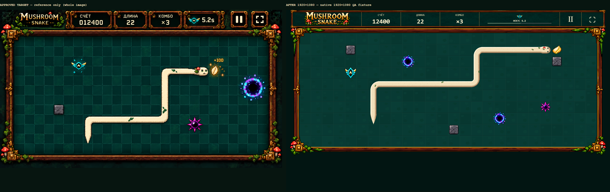
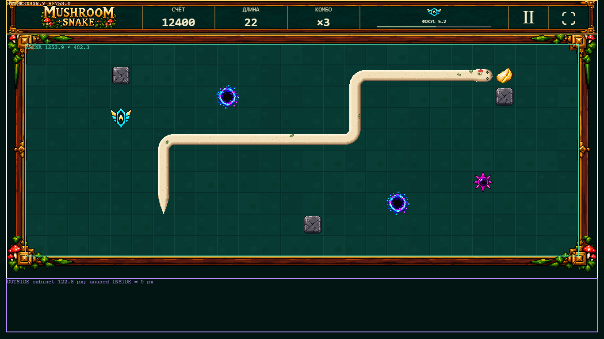
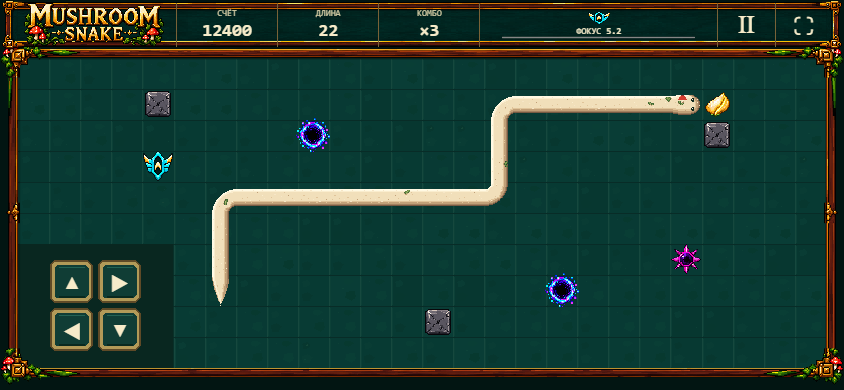
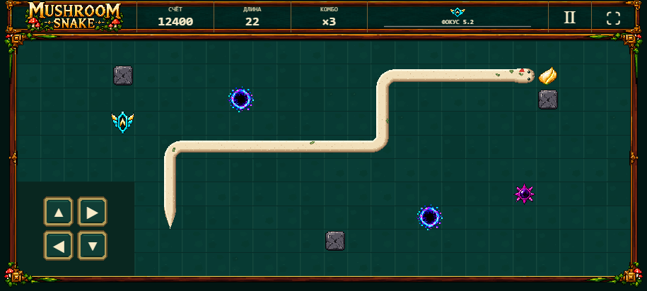
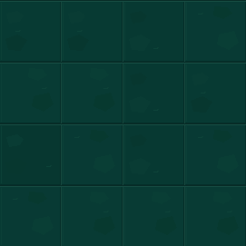
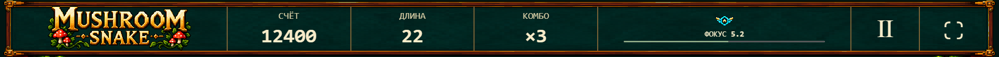

Ровно 7 review images. Изображения показаны 1:1 CSS px, без shrink-to-fit; широкие сравнения прокручиваются горизонтально. Browser zoom: 100%.
Playable DEV Training · Измерения / ограничения / QA · Raw browser measurements
V5.6 art, simulation и механики неизменны. Screenshots — один и тот же явно заданный QA composition fixture, не заявление о достижении этого счёта игрой. TARGET показан целиком и используется только для review.
| Viewport | Stage | HUD | Arena | Dead bands inside |
|---|---|---|---|---|
| 1920×1080 | 1881.6×1058.4 | 1880.9×109 | 1766.9×679.6 | 0 px |
| 1366×768 | 1338.7×753 | 1338.7×78 | 1253.9×482.3 | 0 px |
| 844×390 | 844×390 | 844×48 | 807.5×310.6 | 0 px |
| 915×412 | 915×412 | 904.7×48 | 868.2×333.9 | 0 px |
Ограничение locked topology: 26×10 проходимых клеток. Клетки квадратные, cabinet прижат к ним; desktop 16:9 stage содержит свободное место только СНАРУЖИ cabinet. Visual approval — human review, не автоматический PASS.







STOP: следующий polish / gameplay scope не начат. TEST / Production не публиковались.